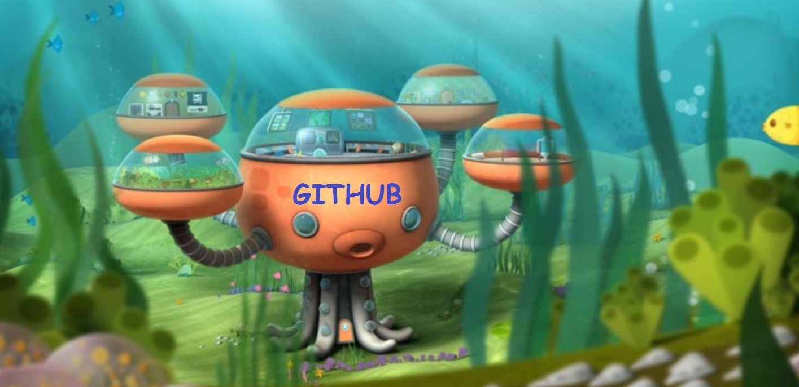

The Catopus is a creature who loves to code. It's native to the Puget Sound area of Seattle, Washington and its favorite thing to do is to teach others how to code, too!

The Catopus lives at the bottom of the Puget Sound in the Octobase. It's a fun, social creature who enjoys trying on many different hats.
The image of the Catopus was borrowed from GitHub, but the idea of the Catopus as a joyful little coding creature came from the brains of Ynga, Steve, Joel, and Liezel. If you'd like to see more adventures from the Catopus, feel free to donate to our team here.